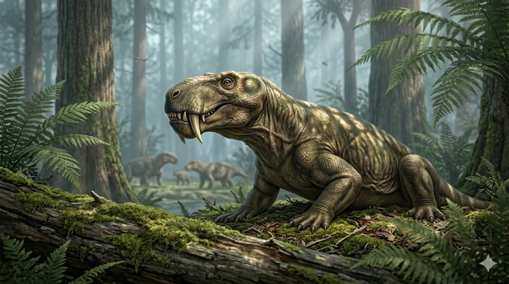

גורגונופס
The First Saber-tooth: Gorgonops torvus

תיק מחקר: נתונים אבולוציוניים
תקופת פעילות
260 עד 254 מיליון שנה
שלהי תור הפרם (Lopingian)
מסה גופנית (משקל)
100 עד 150 קילוגרם
גודל של יגואר מודרני
ממדים (אורך)
2 עד 2.5 מטרים
טורף יבשתי זריז בעל זנב קצר
מיקום גיאוגרפי
דרום אפריקה
ממצאים באגן הקארו (Karoo Basin), שהיה חלק מיבשת גונדוואנה בדרום פנגיאה.
סיווג טקסונומי קריטי
סינאפסיד (Synapsid) – תראפסיד
הוא אינו דינוזאור ואינו זוחל. זהו "זוחל דמוי-יונק" (Stem-mammal) על קו התפר האבולוציוני בדרך ליונקים המודרניים.
01 // ניתוח אטימולוגי נרחב
| החלק בשם | שפת מקור | פירוש ומשמעות היסטורית |
|---|---|---|
| Gorgon | יוונית (Γοργώ) | גורגונה (מפלצת מיתולוגית) מתייחס למפלצת האכזרית מהמיתולוגיה היוונית (כמו מדוזה) שמבטה מאבן. |
| -ops | יוונית (ὤψ) | פנים / מראה החלק המתאר את חזות הגולגולת המפלצתית. |
| torvus | לטינית | פראי / אכזר / זועף הלחם מלא: **"פני הגורגונה האכזריים"**. השם הוענק ב-1876 על ידי סר ריצ'רד אוון. |
02 // תולדות הגילוי: אוצרות אגן הקארו והשלמות שחסרה
הזיהוי של ריצ'רד אוון (1876)
באמצע המאה ה-19, חוקר הטבע תומאס ביין מצא גולגולות מוזרות באזור הצחיח של אגן הקארו (Karoo Basin). הוא שלח אותן ללונדון לסר ריצ'רד אוון.
אוון נדהם לגלות תכונה מהפכנית בגולגולת (שכללה ניבים באורך 12 ס"מ): **הטרודונטיה (Heterodonty)**. בניגוד לזוחלים, ליצור היו שיניים חותכות, ניבי-חרב, וטוחנות – תכונה המאפיינת יונקים! הגורגונופס הוגדר כ"חוליה חיה" בדרך ליונקים.
תעלומת השלד השלם (Phylogenetic bracketing)
התגליות של הגורגונופס המקורי כללו רק גולגולות מעוכות (כי הטורף מת בשטח פתוח ועצמותיו פוזרו). עם זאת, המדע יודע בדיוק כיצד הוא נראה בזכות מציאת **שלדים שלמים ומחוברים לחלוטין (Articulated)** של "בני דודים" מאותה משפחה.
- **הליקנופס (Lycaenops):** שלדיו השלמים מדרום אפריקה הוכיחו את היציבה היונקית.
- **אינוסטרנצביה (Inostrancevia):** שלדים מושלמים של גורגונופס הענק נמצאו ברוסיה (על ידי אמליצקי) קבורים בבוץ יחד עם סקוטוזאורוסים.
ביומכניקה: אב הטיפוס של טורפי העל
מערכת ניבי-החרב (Saber-teeth)
עשרות מיליוני שנים לפני הסמילודון, האבולוציה פיתחה אצל הגורגונופס ניבי-חרב משוננים שנועדו לחדור עור עבה. הלסת התחתונה נפתחה לזווית פסיכית של למעלה מ-90 מעלות כדי לפנות דרך לניבים.
התקרבות ליונקים
בניגוד לזוחלים, רגליו האחוריות מוקמו מתחת לגוף ביציבה **חצי-זקופה (Semi-erect)** שהעניקה לו מהירות מתפרצת. חורים בחרטום מרמזים שהיו לו **שפמי חישה (Whiskers)**, וייתכן שפיתח דם חם, בלוטות זיעה ופלומה ראשונית.
אסטרטגיית "הכה וברח" (Bite and Retreat)
האקולוגיה הייתה מלאה באוכלי עשב משוריינים. לסתו של הגורגונופס לא הייתה חזקה מספיק לרסק עצמות שריון, ולכן הוא פעל ממארב: הוא הסתער, נעץ את הניבים בצוואר הטרף, חתך עורק ראשי ונסוג לאחור. הוא המתין בסבלנות שהטרף הכבד ידמם למוות, ורק אז ניגש לאכול.